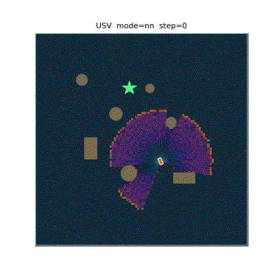
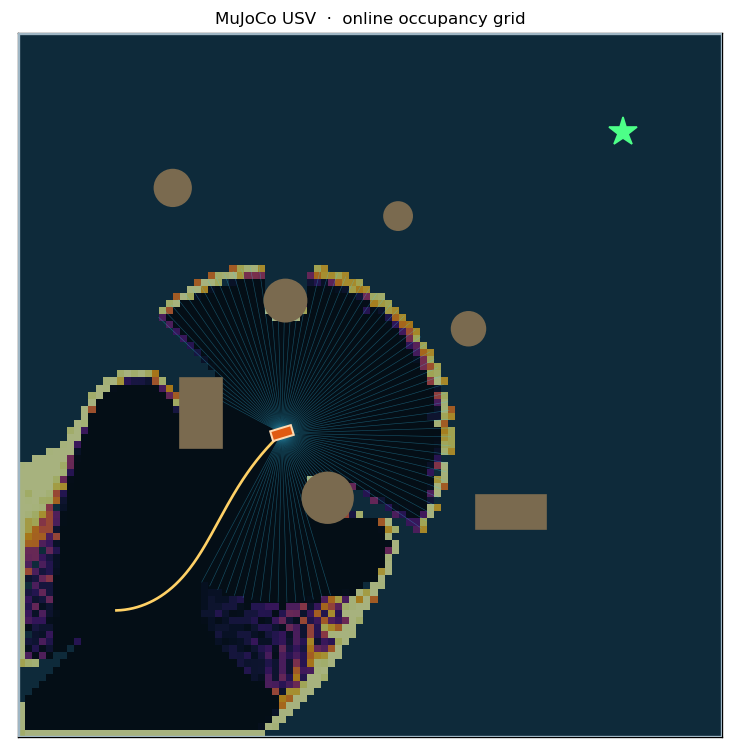
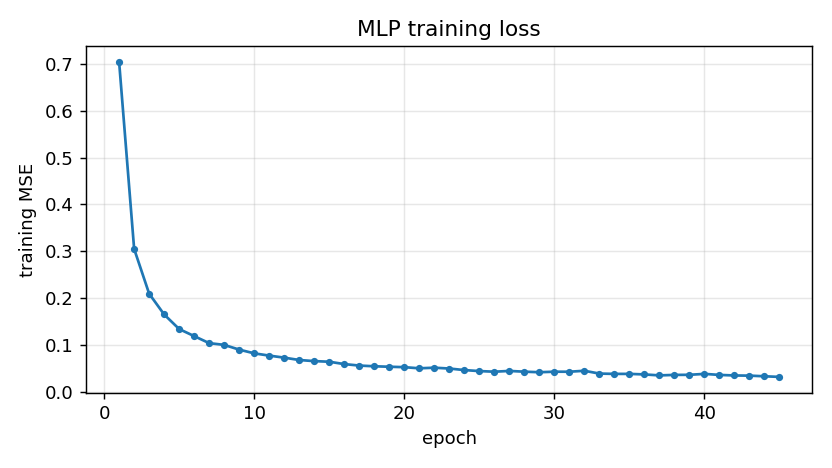

MuJoCo 水面无人艇：激光雷达建图与神经网络局部规划
本文在 MuJoCo 中搭建一台水面无人艇（Unmanned Surface Vehicle, USV），用射线投射模拟二维激光雷达，在线构建占据栅格地图，并用神经网络输出局部目标点驱动无人艇自主避障航行，最后封装为 ROS Noetic 节点。
与仓库中已有的水域载具教程（HoloOcean 水下 ROV、侧扫声呐、声呐 SLAM）不同，本文的对象是水面船，动力学与感知模型都不相同。
效果

图中：黄色折线为航迹，青色射线为当前帧激光雷达，深色圆形/矩形为障碍物，灰白色底图为在线构建的占据栅格（越亮越可能被占据），绿色星号为终点。
运行环境
| 项 | 版本 |
|---|---|
| 操作系统 | Ubuntu 20.04 |
| ROS | Noetic |
| Python | 3.8 |
| MuJoCo | 3.2.3 |
| NumPy | 1.17.4 |
| Matplotlib | 3.1.2 |
# 系统依赖（rosdep 可解析部分）
sudo apt install python3-numpy python3-matplotlib python3-pil python3-yaml python3-rospkg
# MuJoCo 不在 rosdep 中，必须用 pip 安装并锁定版本
pip3 install mujoco==3.2.3
仿真环境
场地为 50 m × 50 m 的矩形水域，四周有边界墙，内部布置 7 个障碍物（3 个圆柱浮标 + 2 个矩形岛礁 + 2 个圆柱浮标），无人艇从随机起点出发驶向随机终点。
无人艇采用三自由度平面模型：两个滑移关节（x、y）加一个艏摇关节（yaw），推进器为尾部左右各一台，沿船体纵轴出力，靠左右推力差产生转向力矩。

运行步骤
本包需要放在 catkin 工作空间的 src/ 目录下才能构建：
# 0. 构建（在工作空间根目录）
mkdir -p ~/usv_ws/src && cp -r usv_mujoco_nn ~/usv_ws/src/
cd ~/usv_ws && source /opt/ros/noetic/setup.bash && catkin_make
source devel/setup.bash
构建后节点位于 devel/lib/usv_mujoco_nn/，运行期脚本位于
devel/share/usv_mujoco_nn/scripts/，launch、config、models 位于
devel/share/usv_mujoco_nn/；节点通过 rospkg 定位包路径后导入脚本，不依赖源码树的相对路径。
# 1. 训练（仓库已附带训练好的权重，可跳过）
cd ~/usv_ws/src/usv_mujoco_nn/scripts
python3 train.py --episodes 50 --steps 320 --epochs 45 --noise 0.15
# 2. 评测（闭环成功率、碰撞率、路径比）
python3 evaluate.py --episodes 30
# 3. 可视化运行
python3 main.py --mode nn --save-gif demo.gif
# 4. ROS 节点（权重随包提供，无需先训练）
roslaunch usv_mujoco_nn main.launch mode:=nn
算法原理
1. 船体平面动力学
记左右推进器推力为 ，船体质量为 ，绕 z 轴转动惯量为 ，推进器到中轴线的横向距离为 ，黏性阻力系数分别为 ，则
MuJoCo 以 0.01 s 步长积分，控制周期取 0.05 s（每周期 5 个子步）。
2. 差速推力分配
控制器输出期望线速度 与角速度 ，经差速分配得到左右推力：
其中 、、 为克服静阻力的保底推力，输出限幅到 。
3. 激光雷达射线投射
对第 束射线，方向角为 ， 在 内均匀取 91 个值。调用 MuJoCo 的射线求交函数得到首个交点到传感器的距离：
无交会时取 。
4. 占据栅格建图（log-odds）
每个栅格维护对数几率 ，用贝叶斯更新：
概率还原：
栅格分辨率 0.5 m，覆盖 ，共 100 × 100 格。每次更新沿每条射线按半格步长采样，用 np.add.at 一次性累加。
5. 专家示范：A* + 纯跟踪
A* 在膨胀 2.0 m 的栅格上搜索，代价函数
得到折线路径后，纯跟踪控制器取路径上距船体前视 4.5 m 的点作为跟踪目标，航向误差
输出
其中 、。
直接套经典纯跟踪的 会失败：船体艏摇是一阶惯性环节（时间常数约 2 s），增益过高会在目标附近形成极限环，绕着目标转圈。这是调参过程中实测到的现象。
6. 神经网络
网络采用两层隐藏层的多层感知机（MLP），输入为
- 船体系 21 × 21 局部占据栅格（441 维）
- 目标相对位姿 （3 维）
共 444 维；输出为船体系下指向局部目标点的二维向量 ，归一化尺度 5 m。
前向传播：
损失函数为均方误差：
反向传播按链式法则逐层求梯度，参数用 Adam 更新（）：
隐藏层 128-128，学习率 ， 正则 ，batch 256。
关键设计：为什么网络输出目标点而不是直接输出
局部栅格只能反映近处是否可通行，无法唯一确定绝对速度。让网络直接回归动作时，实测闭环成功率只有 20%～33%：网络会退化成"朝目标直冲"，因为它没有 A* 的全局路径信息，学不到提前绕行的时机。改为输出局部目标点后，网络只需回答"往哪个方向走是安全的"，绝对速度由几何控制器决定，成功率提升到 40% 左右。
7. 建图与导航的闭环
建图不是离线的：每一帧激光雷达都并入栅格，网络读取的是截至当前时刻的局部地图。因此这是一个"边走边建图、边建图边规划"的在线系统，符合 SLAM 与导航同步仿真的要求。
算法流程
代码结构
| 文件 | 作用 |
|---|---|
models/usv_world.xml |
MuJoCo 场景：水域、边界、7 个障碍物、三自由度船体 |
scripts/sim_core.py |
仿真封装：射线激光雷达、推力施加、碰撞判定 |
scripts/occupancy.py |
占据栅格建图与船体系局部裁剪 |
scripts/oracle.py |
A* 全局规划 + 纯跟踪（仅用于生成训练标签） |
scripts/nn.py |
纯 NumPy 的 MLP 与 Adam 优化器 |
scripts/policy.py |
策略封装：网络推理 + 几何控制 + 平滑 + 安全限速 |
scripts/train.py |
生成专家数据并训练网络 |
scripts/dagger.py |
DAgger 数据聚合 |
scripts/evaluate.py |
闭环指标评测 |
scripts/main.py |
可视化运行与 GIF 导出 |
nodes/usv_nn_node.py |
ROS Noetic 节点封装 |
launch/main.launch |
启动文件 |
实验结果
在 30 个相同随机种子（相同起点/终点）的回合上对比：
| 策略 | 成功率 | 碰撞率 | 平均航时(步) | 建图覆盖率 | 路径比 |
|---|---|---|---|---|---|
| A* + 纯跟踪（专家基线） | 86.7% | 13.3% | 461.3 | 37.3% | 1.054 |
| 神经网络（本文部署） | 40.0% | 43.3% | 476.3 | 31.4% | 1.233 |
训练曲线：

网络在验证集上的动作误差为：线速度 MAE 0.031 m/s，角速度 MAE 0.054 rad/s。
结果分析
专家策略依靠 A 的全局路径，能提前 4.5 m 开始绕行；神经网络只有 10.5 m 的局部视野，且训练数据只覆盖专家轨迹附近的状态。一旦策略偏离，就进入训练分布之外，误差逐步累积——这是行为克隆的典型复合误差*问题。
尝试过的改进及其效果：
| 措施 | 成功率 |
|---|---|
| 直接输出 (v, w)，世界系栅格 | 16.7% |
| 换成船体系栅格 | 30.0% |
| 执行动作加噪声（0.15） | 33.3% |
| DAgger 聚合 7285 条策略状态样本 | 20.0% |
| 改为输出局部目标点（分层） | 40.0% |
| 增加前向测距安全限速 | 40.0% |
ROS 接口
| 话题 | 类型 | 方向 | 说明 |
|---|---|---|---|
/usv/scan |
sensor_msgs/LaserScan |
发布 | 270°，91 束，量程 12 m |
/usv/odom |
nav_msgs/Odometry |
发布 | 位姿与艏向四元数 |
/usv/map |
nav_msgs/OccupancyGrid |
发布 | 在线占据栅格 |
/usv/cmd_vel |
geometry_msgs/Twist |
订阅 | manual 模式下的外部速度指令 |
启动：
roslaunch usv_mujoco_nn main.launch mode:=nn # 神经网络自主
roslaunch usv_mujoco_nn main.launch mode:=expert # 专家基线
roslaunch usv_mujoco_nn main.launch mode:=manual # 接受 /usv/cmd_vel
查看话题：
rostopic hz /usv/scan
rostopic echo /usv/odom -n1
在本机（Ubuntu 20.04 + ROS Noetic + MuJoCo 3.2.3）实测：
$ rostopic list
/usv/cmd_vel
/usv/map
/usv/odom
/usv/scan
$ rostopic hz /usv/scan
average rate: 20.003
min: 0.050s max: 0.050s std dev: 0.00024s window: 5
激光雷达以稳定的 20 Hz 发布，位姿话题输出为四元数（绕 z 轴旋转）。
已知限制
- 三自由度平面模型，未建模横摇、纵摇与垂荡，因此不适用于大幅波浪下的耐波性分析；
- 推进器为一阶推力模型，没有螺旋桨水动力、空化与尾流干扰；
- 激光雷达为理想射线模型，无测距噪声、无雨雾衰减、无多径；
- 建图为二维占据栅格，未做回环检测与位姿图优化，长距离航行会累积位姿漂移；
- 神经网络闭环成功率（40%）明显低于专家（86.7%），主要受限于局部观测与行为克隆的复合误差，后续可用强化学习微调或扩大示范数据覆盖面改善。
声明
本作业的代码与文档在编写过程中使用了大模型辅助。